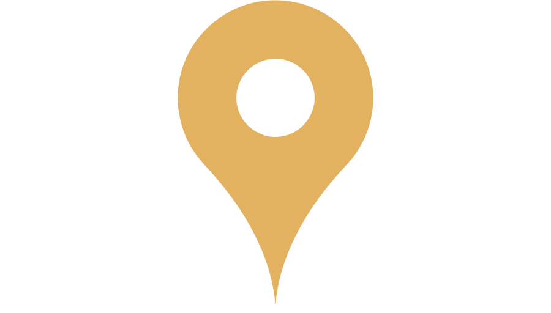

Développeur Web Fullstack
Formation intensive WildCodeSchool - Remote
 Lille
aitkhelifa.fatima59@gmail.com
DEVELOPPEUR WEB JUNIOR
Après des études de management, j'ai travaillé pendant près de six ans en réseau et télécommunication.
En Septembre 2021, j'ai décidé de donner un nouvel élan à ma carrière professionnelle en me dirigeant vers le numérique.
Accompagnée par une coach professionnelle, j'ai décidé d'entamer une reconversion en tant que développeur web.
Actuellement en formation intensive à la
WildCodeSchool, je suis à la recherche d'un stage d'une durée de 4 à 6
mois pour Février/Mars 2022.
J'ai souhaité créer ce site afin de vous présenter mon parcours et ainsi
dynamiser ma recherche de stage.
Formation intensive WildCodeSchool - Remote
Université Polytechnique Hauts-de-France - Valenciennes
Lycée André Lurçat - Maubeuge
Lycée André Lurçat - Maubeuge
Ce projet a été réalisé en moins d'un mois. Composé d'une équipe de quatre personnes, nous avons créé un site permettant aux utilisateurs de connaitre la moyenne de leur nutriscore.
L'application web permet de scanner des produits mais aussi de pouvoir faire une recherche manuelle de code barre. Totalement responsive, le site est fonctionnel tant sur mobile que sur desktop.
Nous avons réalisé les maquettes ainsi que la charte graphique. Ce projet a été réalisé en impliquant la méthode SCRUM. Nous avons ainsi pu créer nos "users stories" et ainsi pu prioriser les différents avancement de la conception.
À tour de role, nous avons chacun pu valider les différents merges vers GITHUB.
Nous nous sommes basés sur l'API openfoodfact pour réaliser ce projet. La WildCodeSchool.nous avait donné pour condition de n'utiliser que React. Afin de contourner l'impossibilité de créer des comptes utilisateurs, nous nous sommes basés sur le localstorage pour la gestion des favoris.
Ce projet a été réalisé en moins d'une semaine. Composé d'une équipe de quatre personnes, nous avons créé un site permettant de répondre aux questions d'un futur étudiant à la WildCodeSchool.
Nous avons réalisé les maquettes ainsi que la charte graphique.
Mes "features" ont été portées sur la page d'accueil et la page contact.
Le site est crée en HMTL/CSS et Javascript.